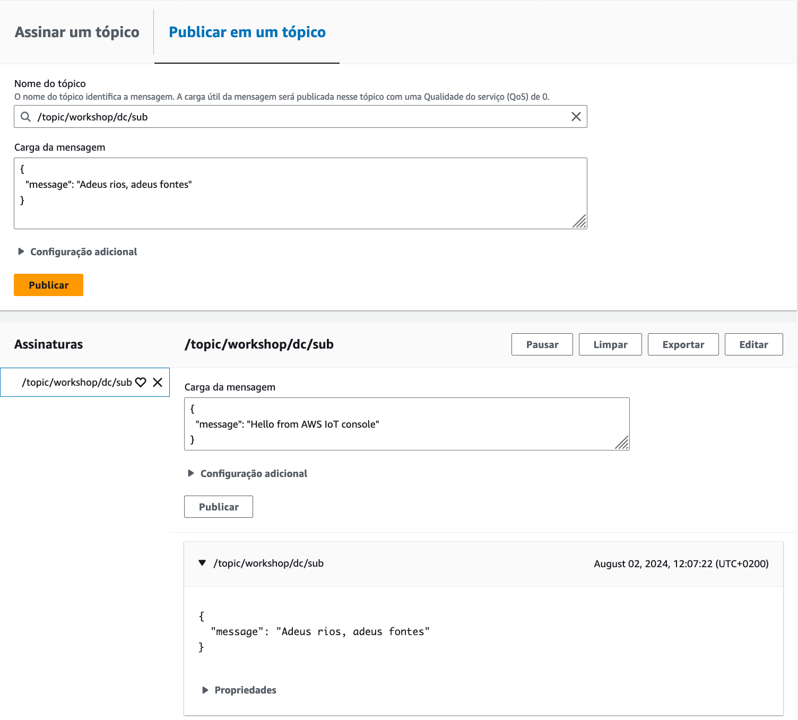
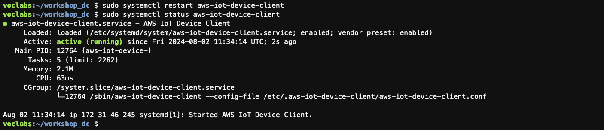
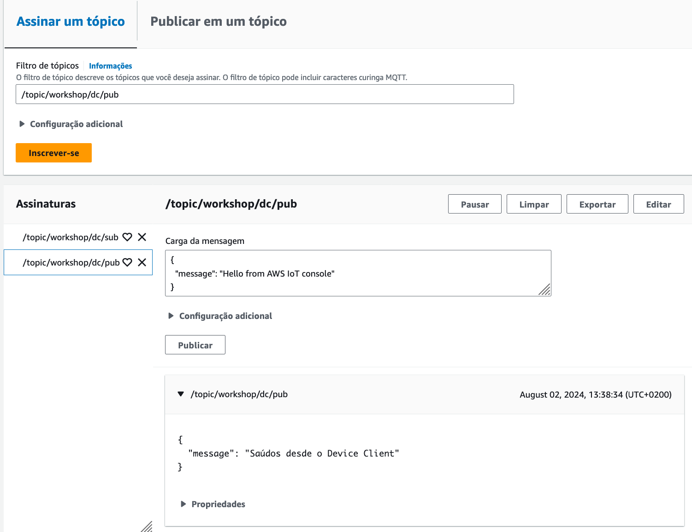

Actividade 1
MENSAXERÍA MQTT A TRAVÉS DOS FICHEIROS DE PUBLICACIÓN E SUBSCRICIÓN.
Obxectivo
O obxectivo desta actividade é comprobar o funcionamento da mensaxería MQTT do Device Client a través dos ficheiros de publicación e subscrición.
Nota
Podes ver aquí a documentación.
Comprobación do funcionamento da mensaxería MQTT
Fai o seguinte:
- Comproba nun terminal do ambiente Cloud9 no que estexa instalado o AWS IoT Device Client a configuración actual da mensaxería MQTT.
$ sudo apt install jq
$ sudo cat /etc/.aws-iot-device-client/aws-iot-device-client.conf | jq '.samples'
{
"pub-sub": {
"enabled": true,
"publish-topic": "/topic/workshop/dc/pub",
"publish-file": "/etc/.aws-iot-device-client/pubsub/publish-file.txt",
"subscribe-topic": "/topic/workshop/dc/sub",
"subscribe-file": "/home/ubuntu/workshop_dc/subfile.txt"
}
}
A saída mostra que a funcionalidade está activada e os tópicos MQTT e ficheiros locais que se están a utilizar para o intercambio de mensaxes.
- Comproba o contido do ficheiro de subscrición.
$ cat /home/ubuntu/workshop_dc/subfile.txt
{
"message": "Saudações do console do AWS IoT"
}
- No cliente MQTT da consola de AWS IoT publica unha mensaxe no tópico
/topic/workshop/dc/sub.
 Imaxe: mensaxe publicada no tópico MQTT.
- Comproba que se actualizou o ficheiro de subscrición.
$ cat /home/ubuntu/workshop_dc/subfile.txt
{
"message": "Saudações do console do AWS IoT"
}
{
"message": "Adeus rios, adeus fontes"
}
- Comproba tamén o ficheiro de log.
$ sudo grep Message /var/log/aws-iot-device-client/aws-iot-device-client.log
2024-08-02T10:07:22.562Z [DEBUG] {samples/PubSubFeature.cpp}: Message received on subscribe topic, size: 44 bytes
- Comproba agora o contido do ficheiro de publicación.
$ sudo cat /etc/.aws-iot-device-client/pubsub/publish-file.txt
{"Hello": "World!"}
Como xa vimos no curso en liña, esta é a mensaxe que se envía ao tópico de publicación configurado cada vez que se reinicia o servizo aws-iot-device-client. Editar o contido dese ficheiro e reiniciar o servizo é o procedemento por defecto para publicar unha mensaxe.
Publicando mensaxes MQTT cando o ficheiro cambia
Outra maneira de publicar mensaxes MQTT no Device Client é facelo cada vez que hai un cambio no ficheiro de publicación, sen necesidade de reiniciar o servizo.
Para comprobar este método de publicación fai o seguinte:
- Edita o ficheiro de configuración do Device Client para activar a publicación de mensaxes cando haxa cambios no ficheiro.
$ sudo nano /etc/.aws-iot-device-client/aws-iot-device-client.conf
$ sudo cat /etc/.aws-iot-device-client/aws-iot-device-client.conf | jq '.samples'
{
"pub-sub": {
"enabled": true,
"publish-topic": "/topic/workshop/dc/pub",
"publish-file": "/home/ubuntu/workshop_dc/pubfile.txt",
"subscribe-topic": "/topic/workshop/dc/sub",
"subscribe-file": "/home/ubuntu/workshop_dc/subfile.txt",
"publish-on-change": true
}
}
Nota
Presta atención a que tamén se cambiou na configuración o ficheiro que imos usar para publicar.
- Crea o ficheiro de publicación e reinicia o servizo.
$ touch /home/ubuntu/workshop_dc/pubfile.txt
$ sudo systemctl restart aws-iot-device-client
- Comproba que non houbera ningún erro ao iniciar o servizo.
 Imaxe: estado do servizo Device Client.
-
No cliente MQTT da consola de AWS IoT subscríbete ao tópico
/topic/workshop/dc/pub. -
Publica unha mensaxe usando o ficheiro e comproba que aparece no cliente MQTT.
$ pwd
/home/ubuntu/workshop_dc
$ echo '{"message":"Saúdos desde o Device Client"}' > pubfile.txt
 Imaxe: mensaxe recibida no tópico MQTT.
- Comproba tamén o ficheiro de log.
$ sudo grep "target file" /var/log/aws-iot-device-client/aws-iot-device-client.log -A 1
2024-08-02T11:38:34.975Z [DEBUG] {samples/PubSubFeature.cpp}: The target file is modified, start updating the shadow
2024-08-02T11:38:34.982Z [DEBUG] {samples/PubSubFeature.cpp}: PublishCompAck: PacketId:(Pub Sub Sample), ErrorCode:0
Xustificación da actividade
Toma as seguintes capturas para a memoria de xustificación da práctica:
- Ambiente Cloud9 mostrando a saída da execución dos comandos seguintes:
$ sudo cat /etc/.aws-iot-device-client/aws-iot-device-client.conf | jq '.samples'
$ echo '{"message":"Saúdos de <Pon aquí o teu nome> desde o Device Client"}' > /home/ubuntu/workshop_dc/pubfile.txt
- Consola IoT coa mensaxe MQTT recibida no tópico
/topic/workshop/dc/pub, na que poida verse o payload, despois de executar os comandos do punto anterior.
Importante
As capturas teñen que asemellarse ás que se tomaron no curso e nas prácticas anteriores. As capturas tomadas na consola AWS teñen que incluír o menú superior no que poida verse o nome de usuario da conta.